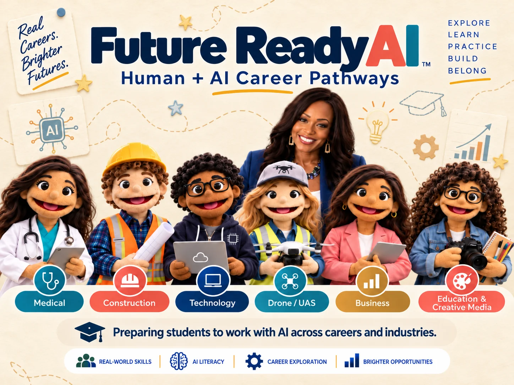
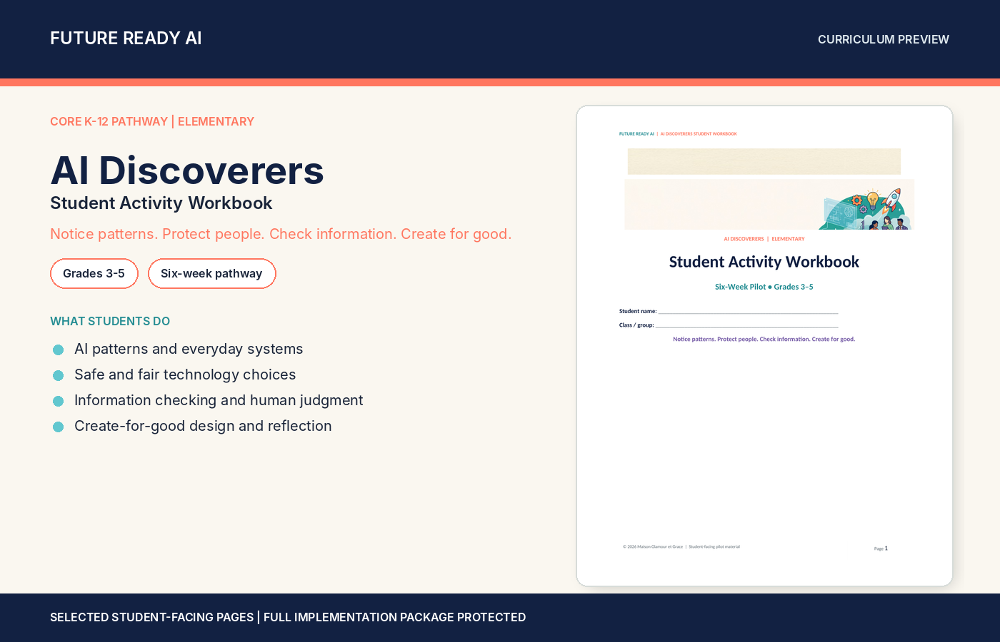
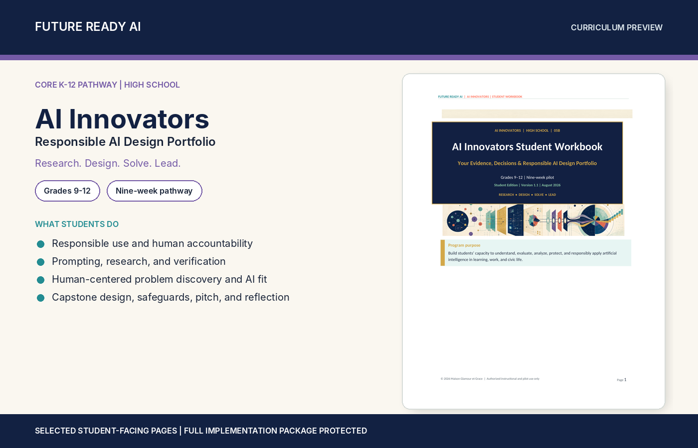
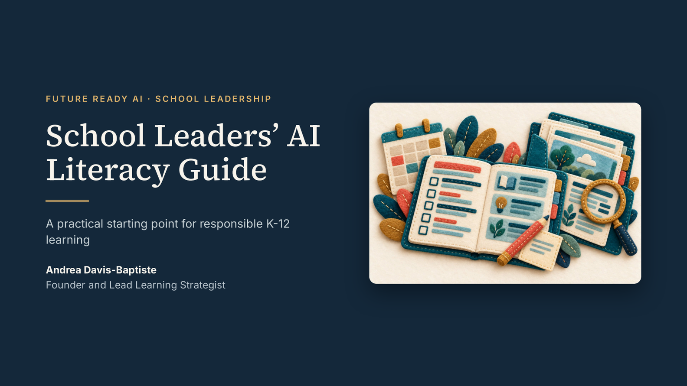

AI Foundations
Core concepts of how AI systems work, in plain language appropriate for every grade band.
K–12 AI literacy • Real-world skills • Brighter futures
A connected K–12 AI literacy pathway that builds confidence, creativity, and future-ready skills.

Our approach
Future Ready AI helps students move beyond simply using artificial intelligence. Students learn how AI systems work, how to verify what they produce, how to protect people and information, and how to establish the human controls responsible AI use requires.
We do not assume AI knows what is right, safe, fair, private, or appropriate. Students learn to define the instructions, boundaries, safeguards, verification processes, and stop conditions—and to keep people responsible for important decisions.
Define the instructions.
Set boundaries and safeguards.
Verify results and set stop conditions.
Keep people responsible for important decisions.
Human judgment. Responsible innovation. Future-ready learners.

New · Career-connected learning
Preparing students to work with AI across careers and industries.
Future Ready AI helps students connect artificial intelligence to the careers and industries shaping their future. Students don't simply learn how to use AI tools. They investigate how AI is changing real work, where technology can support professionals, what responsibilities remain human, and which skills they need to begin developing now.
Students learn to direct AI, evaluate its output, recognize its limitations, apply it to authentic problems, and understand when human expertise, judgment, creativity, communication, ethics, and accountability must lead.
The goal isn't to prepare students to compete against AI. It's to prepare them to work intelligently with it.
Future Ready AI in Motion
A short welcome to how Future Ready AI helps students, educators, and school communities understand, create, and lead with AI, with human judgment, creativity, and curiosity leading the way.
Welcome to Future Ready AI.
I’m your learning guide, and I’m here to help students, educators, and school communities understand, create, and lead with artificial intelligence.
Together, we’ll explore how AI works, how to use it responsibly, and why human judgment, creativity, and curiosity must always lead the way.
Whether you are just getting started or looking for practical tools and support, you’re in the right place.
Let’s begin.
Curriculum Pillars
Core concepts of how AI systems work, in plain language appropriate for every grade band.
Using AI thoughtfully to support writing, design, inquiry, creativity, and problem-solving.
Examining fairness, bias, privacy, and the impact of AI on people and communities.
Clear communication skills for working effectively and thoughtfully with AI tools.
Evaluating AI-generated information and recognizing its strengths and limits.
Preparing students to navigate technology safely, ethically, and confidently.
Grade-Band Pathways
Current student workbooks are designed for Grades 3–5, 6–8, and 9–12. K–2 implementation is supported through teacher-led elementary adaptation guidance rather than a separate K–2 student workbook.
Elementary School
Notice patterns, protect people, check information, create thoughtfully, and build foundational digital citizenship.
Middle School
Analyze systems, audit data, verify evidence, evaluate impact, and design responsibly through a portfolio-based learning experience.
High School
Research, verify, evaluate fairness, examine synthetic media, solve authentic problems, and build evidence through a responsible AI design portfolio.
Lessons can be adapted to school needs and local standards.
Inside the Curriculum
Preview the three core workbooks that anchor the connected K–12 pathway.



Implementation Support
Future Ready AI pairs student learning with educator development, responsible-use planning, family communication, and practical pilot support.
Leadership & Resources

Founder and Lead Learning Strategist bringing education, instructional technology, learning design, and AI enablement together in one K–12 system.
Meet the founder →
Featured Resource
A practical roadmap for responsible, age-appropriate AI literacy planning.
Download the guide →Get Started
Start with a curriculum conversation, educator workshop, readiness assessment, or customized pilot designed around your learners and goals.
Connected programs
Future Ready AI connects K–12 AI literacy to drone career pathways and the professional UAS workforce. These connected destinations help educators, learners, and partners explore the part of the ecosystem that fits their goals.
Career-connected drone education for middle school, high school, and young adult and adult learners.
Explore Drone Career Explorer ↗Professional UAS applications, workforce readiness, operational planning, and emerging-technology capability development.
Visit Maison Glamour et Grâce ↗